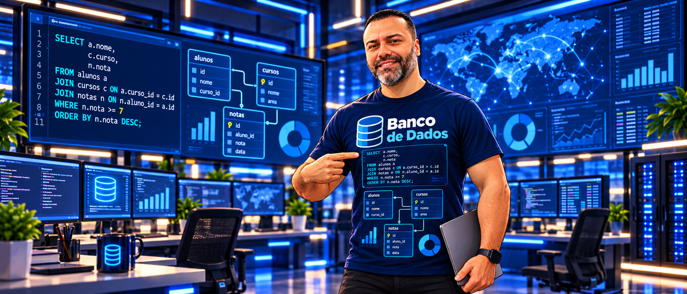

O mundo funciona graças ao Banco de Dados
Dados, informação, banco de dados, SGBD e aplicações no cotidiano.
Abrir aula →Área: Banco de Dados
Treinamento tático em modelagem de dados, SQL e desenvolvimento de soluções.

Dados, informação, banco de dados, SGBD e aplicações no cotidiano.
Abrir aula →Ambiente de trabalho, SGBD, instalação, configuração inicial e organização do projeto.
Abrir aula →Modelo Entidade-Relacionamento, entidades, atributos, relacionamentos e representação gráfica.
Abrir aula →Chaves, atributos, regras de negócio e interpretação prática do Diagrama Entidade-Relacionamento.
Abrir aula →Documentação de tabelas, campos, tipos de dados, chaves, regras e descrições.
Abrir aula →CREATE, ALTER, DROP, TRUNCATE, tipos de dados e construção da estrutura do banco.
Abrir aula →Relacionamentos 1:1, 1:N e N:N, cardinalidades e integridade entre tabelas.
Abrir aula →SELECT, filtros, ordenação, agregações, GROUP BY, HAVING e JOIN.
Abrir aula →INSERT, UPDATE e DELETE com segurança e critérios de alteração.
Abrir aula →COMMIT, ROLLBACK, transações e preservação da consistência dos dados.
Abrir aula →Corrija estruturas problemáticas, aplique 1FN, 2FN e 3FN e depois pense em desempenho com INDEX e EXPLAIN.
Abrir aula →Crie consultas armazenadas, relatórios reutilizáveis e camadas controladas de acesso aos dados.
Abrir aula →Automatize processos, use parâmetros, variáveis, IF e regras de negócio no SmartCoffee.
Abrir aula →Operação especial · missão de campo
As esquadras foram convocadas para auditar bancos problemáticos, reconstruir a modelagem, implementar SQL, aplicar normalização e indexação e defender tecnicamente a solução.
Acessar Operação 360° →SQL Lab
Primeiro laboratório interativo da plataforma.